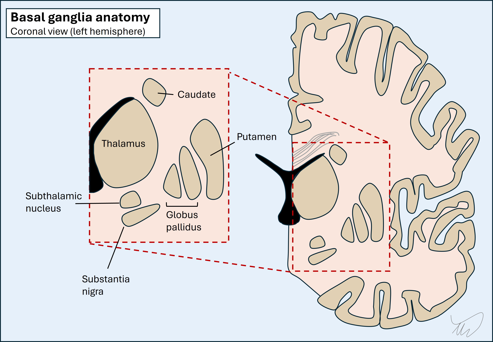
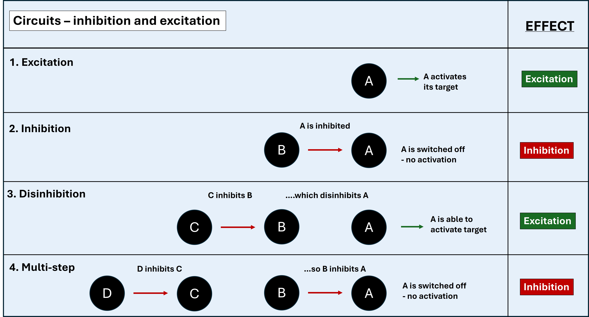
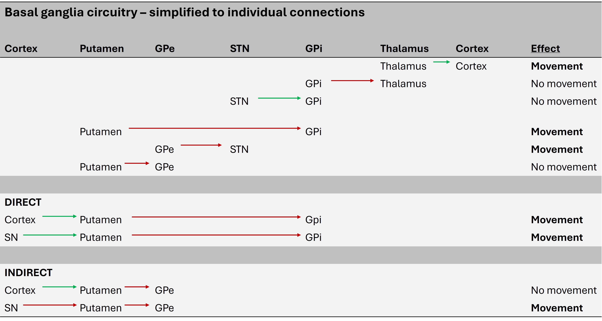
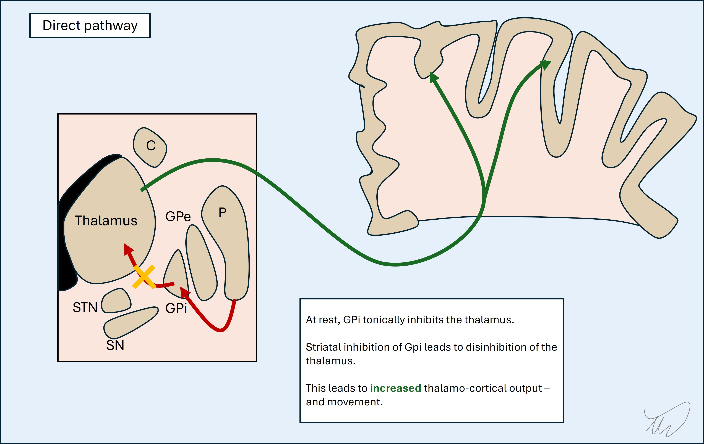
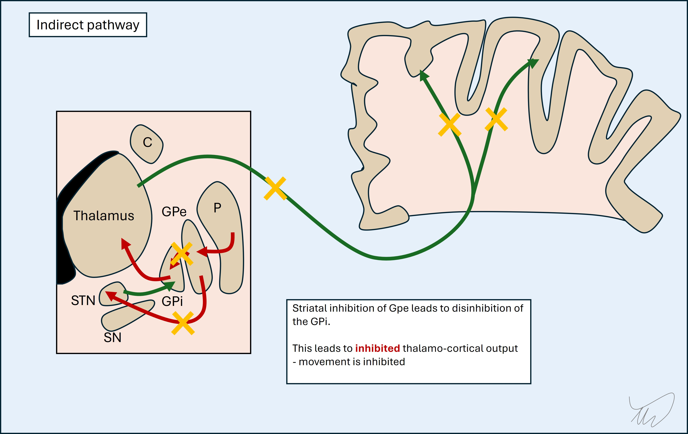
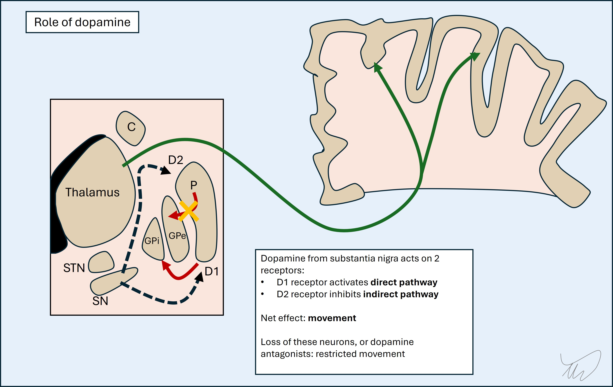

Case 16 - Involuntary movements
Where is the lesion?
This patient has acute onset unilateral involuntary movements involving the hemibody – a hyperkinetic disorder. Our first task is to classify them – i.e. ask, ‘what is the phenomenology?’, and consider causes of lateralised involuntary movements. After that, we can consider the nervous system site that would produce them so suddenly in a previously-well patient.
The two big considerations in hyperkinetic movements are movement disorders and seizures. Hyperkinetic movements - phenomenology
There are many patterns of involuntary excessive movements and this is a complicated topic, but we will simplify this down. Core terms are summarised in the box below.
Tremor – rhythmic, repetitive oscillations around an axis (or several)
Chorea - random, non-patterned movements. Can look like fidgeting, shifting, jerking or smooth flowing movements
Athetosis - slow, writhing, random and non-patterned movements, mostly in distal limbs
Ballism - violent, random, thrashing, proximal movements like throwing a projectile or kicking
Myoclonus – brief, shock-like jerks. Not rhythmic and often not repetitive (but can be). Often called myoclonic jerks
Dystonia - repetitive or sustained muscle contractions leading to an abnormal posture, sometimes with tremor, often twisting and patterned
Tic - repetitive but not rhythmic, stereotyped movements (or vocalisations) with an urge preceding them
Tonic spasm - sustained contraction in a limb. Can be seen with spinal lesions (especially demyelination)
Clonus - repetitive, rhythmic muscle contraction and release, triggered by stretch
Seizure-related - huge variety - can look like spasms, dystonia, myoclonus, clonic contractions and much else. In general they are brief, paroxysmal and stereotyped (each attack looks the same). Continuous focal motor seizures can arise however
Let's recap what we were told about the patient's movements:
Continuous, random, fidgety movements in the left arm and leg, involving different muscles and joints and without any pattern. At times these were twisting and writhing, e.g. hand wringing, finger movements and rolling the ankle; and at others, more violent, as if she were punching, kicking, or throwing a projectile
...and:
Similar shifting movements in the trunk, with the appearance of having the inability to sit still
Even without seeing these ourselves, we can identify various relevant points:
This combination does not sound like most of the terms in the box - it's too random rather than being patterned or rhythmic, and involves too many joints across too broad a segment (the hemibody). While seizures can do all sorts, this pattern of random, chaotic movement is atypical, and they have been continuous for hours which is unusual - focal motor status is more often continuous rhythmic clonic jerking.
The best description is a mix of chorea and ballism and this pattern is often termed hemiballismus, or sometimes hemichorea-hemiballismus.
LocalisationHemichorea-hemiballismus suggests a basal ganglia lesion. These are deep structures on each side of the brain, surrounding the internal capsule as well as involving part of the space below, including the midbrain.

Hemichorea-hemiballismus is a helpful condition to understand how the basal ganglia work, and by understanding how this we can then understand how hemichorea-hemi-ballismus arises - and how we can help suppress it with drugs.
The basal ganglia network is complex, consisting of a series of nuclei and tracts in the brainstem and deep grey matter. The general principle is that its function is to work ‘upstream’ of the motor cortex in making movements smooth and efficient and ensure that appropriate activation takes place in target muscles (agonists), while inhibiting unhelpful activation in others (antagonists), although movement needs a balance of both.
The overall output of the system is directed from the thalamus towards the motor cortex (precentral gyrus). The motor cortex also feeds into the basal ganglia, so it isn't a one-way system - it's a loop.
The circuits are a complex web of inhibition and disinhibition. Many of the internal components operate via GABA and are inhibitory - so the network is a complicated system of OFF switches. This leads to lots of double-negatives. If something inhibits an inhibitor, it switches that inhibitor off - and effectively releases the inhibitor's target, switching it on (disinhibition).

The easiest way to think is in odd and even numbers. If there are consecutive inhibitors, if the number is odd (1 or 3) this is like an OFF switch to the eventual target. If odd (2 or 4), this is a disinhibitor - effectively an ON switch to the eventual target.
There are six main components in the basal ganglia circuit.
1. Substantia nigra (ventral midbrain)The substantia nigra pars reticulata (SNpr) projects excitatory dopaminergic nigrostriatal neurons to the putamen (striatum) and initiates activity in the basal ganglia circuit - although dopaminergic neurons also inhibit other parts (explained later).
2. PutamenPart of the striatum (along with the caudate which isn't really a key element of this circuit). When we deal with the basal ganglia we often just use 'striatum' or 'striatal' to refer to the putamen without the caudate.
It projects inhibitory GABA-ergic neurons into the two parts of the globus pallidus, causing different overall effects - there is a balance between these (see later).
3. Globus pallidus externa (GPe) and interna (GPi)Together with the putamen they make a lens-shaped body - the lentiform nucleus - and this is the lateral border of the internal capsule. The GPi and GPe have different functions and outputs:
The STN sends glutamatergic excitatory neurons to the GPi. Essentially it keeps it tonically switched ON.
5. Thalamus - ventrolateral part (VL)This projects glutamatergic thalamocortical fibres which stimulate the motor cortex, leading to movement - if the GPi braking signal is lifted.
6. Motor cortexThere are bidirectional parts to this. It starts the process by stimulating the putamen (excitatory glutamatergic corticostriatal fibres) - and it is the end point of the circuit, stimulated by thalamocortical output fibres - with movement following.
If we simplify this into what inhibits, excites or can do both, we get the below. The nucleus is shown with its target in brackets:
This seems complicated with lots of structures inihibiting or activating each other. A simplified version, reducing it to its individual connections, is shown below.

The basal ganglia circuit can be reduced to two routes - the direct and indirect pathways. In simple terms the direct pathway is the 'GO' pathway, leading to movement, and the indirect is the 'NO-GO' pathway, inhibiting movement. It's not about the presence or absence of movement overall in a binary sence - it's about desired movements being facilitated, and unwanted ones being suppressed.
Direct pathwayThe cortex and SNpr both project to the putamen (striatum) and excite it. This is via glutamate (from cortex) and dopamine (from SNpr) - specifically D1 receptors.
The putamen then inhibits the GPi, which releases the VL thalamus. By taking this brake off, the thalamus can excite the cortex, leading to movement.

Indirect pathwayThis has more steps in it so it's worth breaking them down from end to start.
The STN keeps the GPi tonically active, inhibiting the thalamus (and hence cortex). The GPe inhibits the STN, so effectively disinhibits the thalamus and cortex.
The putamen inhibits the GPe via the indirect pathway. This inhibits the disinhibition of the thalamus and cortex - i.e. the putamen switches them off.
So the indirect pathway essentially switches of stimulation of the motor cortex. That seems at odds with its function in the direct pathway - but it's a question of which muscles are needed for a movement (activated by direct pathway) and which are not (inactivated by indirect pathway).

The indirect pathway is stimulated by the cortex, leading to suppression of these unwanted movements while targeted movement takes place.
It is also inhibited by the dopamine from the substantia nigra - unlike the direct pathway - by action on the D2 receptors. This might seem as if dopamine has contradictory effects - activating the direct pathway (GO) and inhibiting the indirect (also GO). The key concept is that dopamine fine-tunes desired movements.

Dopamine is clearly very important here. When there is too little dopamine, there is too little movement. Movements are slow and hard to initiate. This is seen in Parkinson's disease, with loss of the nigrostriatal dopaminergic neurons. It's also seen in dopamine receptor antagonists, for example anti-psychotics and anti-emetic drugs.
Basal ganglia lesionsDisease in the basal ganglia can produce an array of consequences depending on the structure involved, and given that this is a network, a lesion at one point in a pathway could have similar effects to another up- or downstream of it - rather than only one site producing a given effect.
In general the effects can be tremor, dystonia, parkinsonism (rigidity, bradykinesia, difficulty initiating movement), chorea or ballism. Focal lesions sometimes produce one or more of these movement disorders.
The basal ganglia works unilaterally, without decussation – the right cortex feeds into the right basal ganglia, which feed back into it. The clinical effects of lesions are seen in the contralateral body - note this is in contrast to the cerebellar hemispheres, where lesions produce ipsilateral deficits (the right cortex feeds into the left cerebellum, then back to the right cortex, then left body).
We know, then, that we're dealing with a right-sided lesion. The question is what part of the circuit would produce this phenotype.
Hemiballismus was classically described as being due to STN lesions. This makes sense as the STN keeps the GPi switched on and hence movement is suppressed - STN damage would disinhibit the thalamus and cause movements.
It is now recognised that lesions in other areas can also cause hemichorea-hemiballismus. This includes the putamen, globus pallidus, caudate, internal capsule (where various fibres travel, including thalamocortical and pallidothalamic fibres), and even cortex (which has bidirectional connections with the circuit). In reality then this is a network issue - not something only attributable to one site. A large Swiss study on movement disorders caused by stroke (GHika-Schmid et al, 1997) found lesions in various locations causing this phenotype.
Here, then, we can say that the likely lesion site is somewhere in the right basal ganglia network, and the most likely suspect is the STN, but it could equally be elsewhere – particularly the putamen or globus pallidus. The capsule seems less likely - as we might expect other features due to additional tract disruption. The cortex seems even less likely given that, while it is a recognised lesion site, this is in uncommon case reports, and we might expect other features.
Formulation